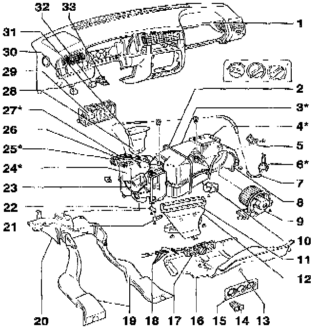

With Air Conditioning
CAUTION: Before working on electrical system, obtain radio code and disconnect battery Ground (GND) strap.NOTE:
- Parts marked with an * can only be serviced by specially equipped service workshops, since refrigerant systems must be evacuated beforehand with extraction station ACR4.
- All available procedures for servicing components are not necessarily in this article alone. If the information needed is not found in this article, try looking for information under specific component.

1 - Instrument panel
2 - Retaining strap
3 - Evaporator housing*
- With evaporator
- With fresh/recirculating air flap
4 - Seal*
5 - Fresh air blower series resistance -N24-
6 - Fresh air/recirculating flap vacuum servo*
7 - Vacuum hose
8 - Seal
9 - Fresh air blower -V2-
10 - A/C evaporator temperature switch -E33-
- Vehicles up to 07.93
- Prevents evaporator from freezing
- Located behind cover -16-
- Insert sensor tube of temperature switch into evaporator 330 mm (13.0 in.)
- Switch opens (compressor OFF): below -2 °C (28 °F)
11 - Seal
- Always replace
12 - Intermediate connecting duct
- With seal
13 - Plug
14 - A/C switch -E35-
- From 08.93 (1994 m.y.): revised to include A/C switch -E35- and fresh air/recirculating flap switch -E159-
- Verify correct part number
15 - A/C control head trim
16 - Cover
- Replacing: first remove instrument panel.
17 - A/C control head
18 - Control cables
- Remove footwell air outlet -20- before removing
19 - Rear footwell air ducts
20 - Footwell air outlet
- Remove center console before removing
21 - Central flap lever
22 - Temperature flap lever
23 - Footwell/defrost flap lever
- Lever and flap are one piece
24 - Heater (air distribution) box*
- Do not disassemble any further
25 - Heater core*
To install:
- Install seals around perimeter of heater core so there are no gaps and glue in place.
- If heater core does not lock into place during installation, fasten to heater box using screws through tabs on top of heater core.
- After removing heater core, drain entire cooling system and refill with new coolant.
26 - Vacuum hose clip
27 - Seal*
28 - Intermediate connecting duct
29 - Relay
Vehicles up to 07.93:
- A/C relay -J32- (control number 13)
Vehicles from 08.95:
- VR6, engine code AAA: relay for A/C shutoff -J365- (control number 147)
- Diesel, engine code 1Z: A/C clutch cut-off relay -J246- (control number 38)
30 - A/C cut-off control module -J314-
- Only on Diesel vehicles with engine code AAZ
- Above relay plate
- Control number 129
31 - Seal
- Always replace
32 - Not applicable for US/Canada
33 - Heater fuse -S23-